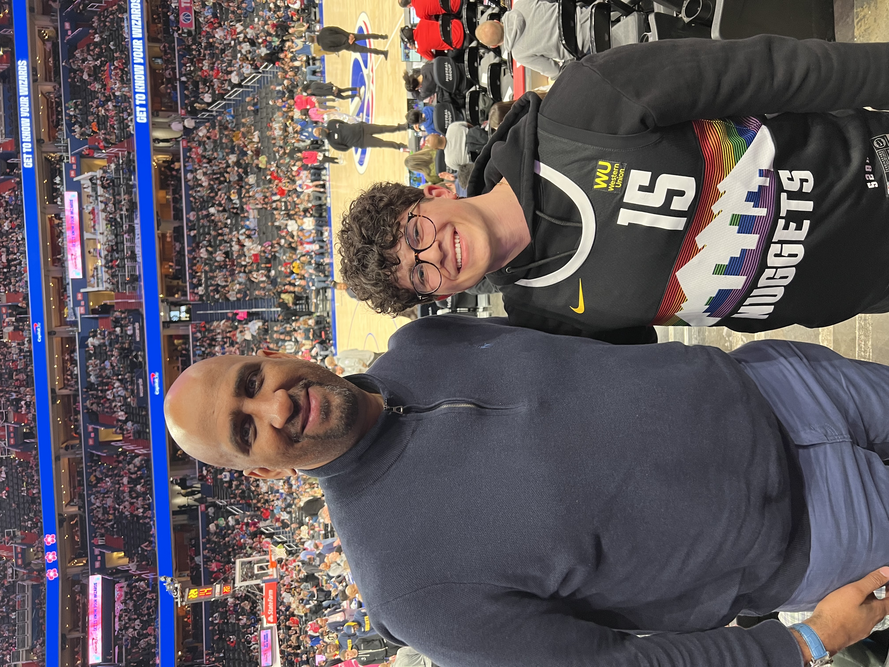
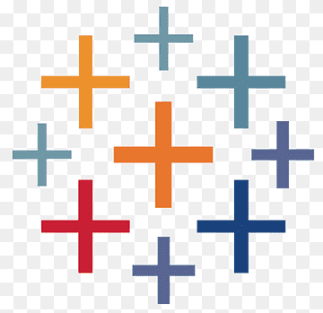

Austin Barish
About Me
Hi! My name is Austin. I am an aspiring Data Scientist currently pursuing a MS in Data Science and Analytics from Georgetown University. I am a member of the accelerated DSAN BA-MS program, meaning I began my graduate studies during my senior year of my undergraduate education. I graduated from Georgetown’s College of Arts and Sciences with a Bachelor of the Arts in Economics and Philosophy in May, 2023. With the accelerated program, I am on track to graduate with my MS in May, 2024.
Outside of school, I am a huge sports fan. Namely, I am a fan of the Denver Broncos, Georgetown Hoyas, and your 2023 NBA Champion Denver Nuggets. I have also recently picked up an interest in soccer; you can often find me in the stands of Audi Field supporting DC United. Being from Colorado, I also love to ski and exercise. Finally, I am a massive foodie and am always looking for new restaurant recommendations.

Languages and Tools





Contacts and Websites
- Github: https://github.com/austinbarish
- LinkedIn: https://www.linkedin.com/in/austin-barish
- Email: abb110@georgetown.edu
- Phone: +1 (720) 666-3689